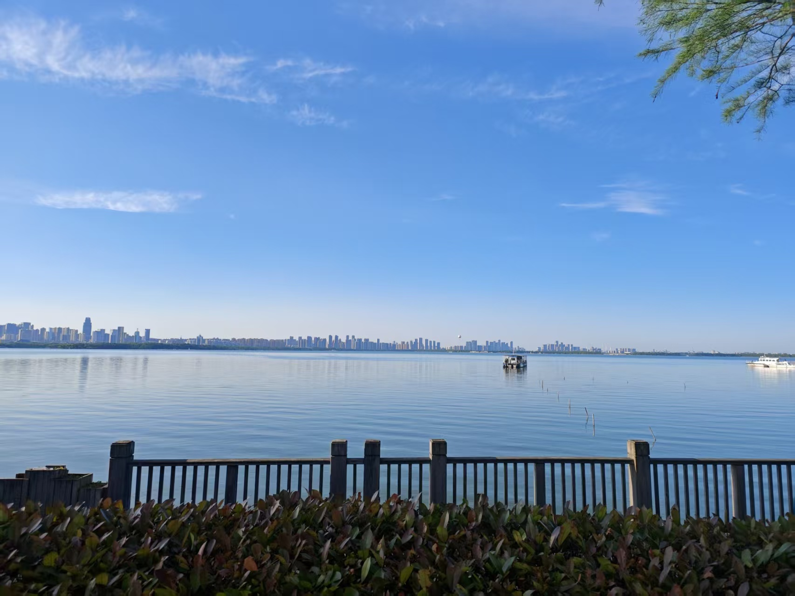
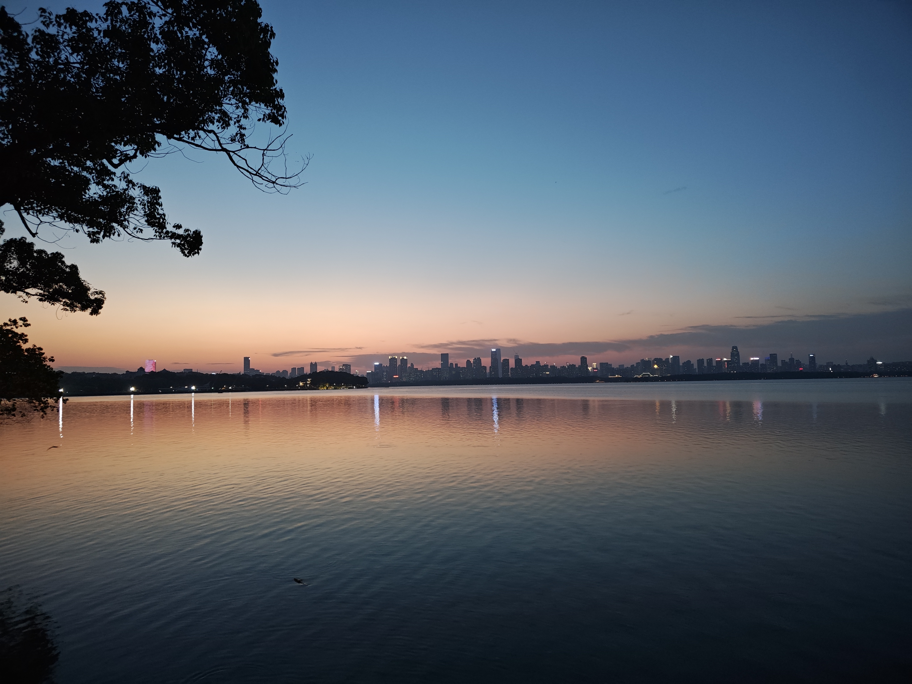
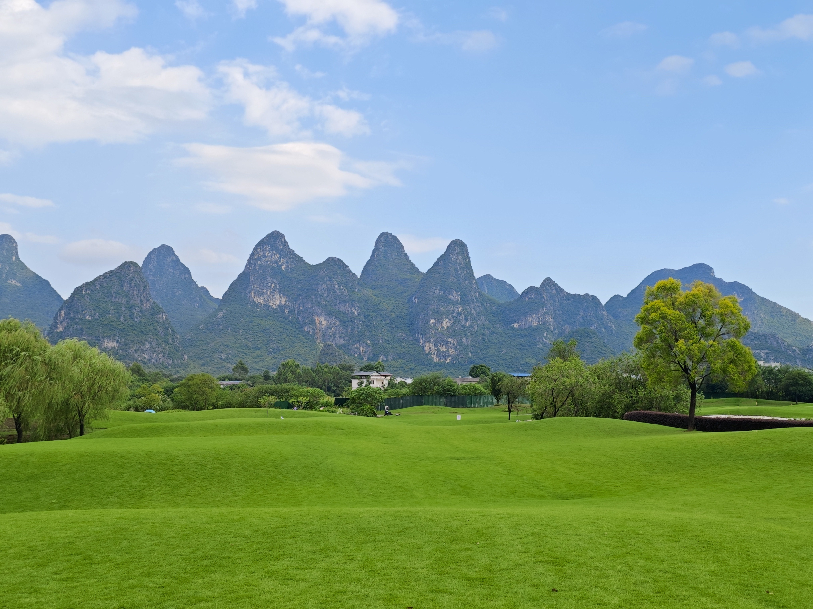

<!-- Conferences Talks -->
<style>
body {
    font-family: "Georgia", serif;
    text-align: left;
    margin: 0;
    background-color: #f0f0f0;
}

.content {
    max-width: 1000px;
    margin: 0 auto;
    padding: 20px;
}

.photo-section {
    margin-bottom: 40px;
}

.photo-section h2 {
    font-size: 1.5em;
    margin-bottom: 10px;
    border-bottom: 2px solid #ccc;
    padding-bottom: 5px;
}

.photo-grid {
    display: flex;
    flex-wrap: wrap;
    gap: 15px;
    justify-content: flex-start;
}

 .content {
    max-width: 86%;  /* 占屏幕 86% 宽度 */
    margin: 0 auto;
    padding: 20px;
}   
.photo-grid img {
    width: 100%;
    max-width: 360px;
    aspect-ratio: 4 / 3;
    object-fit: cover;
    height: auto;
    border-radius: 8px;
    box-shadow: 0 2px 6px rgba(0,0,0,0.2);
    transition: transform 0.3s;
}

/* 鼠标悬停时放大 */
.photo-grid img:hover {
    transform: scale(1.15); /* hover 放大 15% */
}

/* 鼠标点击时放大更多 */
.photo-grid img:active {
    transform: scale(1.3); /* 点击放大 30% */
}
</style>

<section class="content">

    <div class="photo-section">
        <h2>East Lake in Wuhan, taken in May 2026</h2>
        <div class="photo-grid">
            
            
            
        </div>
    </div>

    <div class="photo-section">
        <h2>Guilin, taken in August 2025</h2>
        <div class="photo-grid">
            
            
              
        </div>
    </div>


</section>
